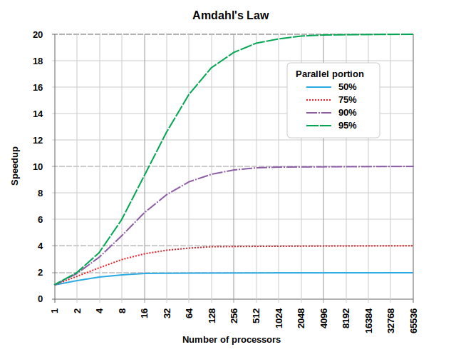

| Term | Definition |
|---|---|
| Local | Your current workstation (laptop, desktop, etc.), wherever you start the terminal/console application. |
| Remote | Any machine you connect to via ssh or other means. |
| EC2 | Single virtual machine in the cloud where you can run computation (ephemeral) |
| SageMaker | Integrated Developer Environment where you can conduct data science on single machines |
| Ephemeral | Lasting for a short time - any machine that will get turned off or place you will lose data |
| Persistent | Lasting for a long time - any environment where your work is NOT lost when the timer goes off |
Lecture 3
Parallelization
Amit Arora
Georgetown University
Spring 2024
Agenda and Goals for Today
- Scaling up and scaling out
- Parallelization
- Map and Reduce functions
- Lab Preview: Parallelization with Python
- Use the
multiprocessingmodule - Implement synchronous and asynchronous processing
- Use the
- Homework Preview: Parallelization with Python
- Parallel data processing
Looking back
- Continued great use of Slack
- Nice interactions
- Lab 2 and Assignment 2 due on Thursday, 15 September
- Lab 3 and Assignment 3 released this week, due Monday, 19 September
Glossary
Parallelization
Typical real world scenarios
- You are a Data Scientist and you want to cross-validate your models. This involves running the model 1000 times but each run takes over an hour.
- You are a Data Scientist and you want to run multiple models on your data, where each run can take up to 1 hour.
- You are a genomics researcher and have been using small datasets of sequence data but soon you will receive a new type of sequencing data that is 10 times as large. This means 10x more transcripts to process, but the processing for each transcript is similar.
- You are an engineer using a fluid dynamics package that has an option to run in parallel. So far, you haven’t used this option on your workstation. When moving from 2D to 3D simulations, the simulation time has more than tripled so it may make sense to take advantage of the parallel feature
- You are a Data Scientist at the Federal Reserve and you have millions of text to process. So far, you have only executed NLP on thousands of articles and have not implemented machine learning models on them.
Parallel Programming
Linear vs. Parallel
Linear/Sequential
- A program starts to run
- The program issues an instruction
- The instruction is executed
- Steps 2 and 3 are repeated
- The program finishes running
Parallel
- A program starts to run
- The program divides up the work into chunks of instructions and data
- Each chunk of work is executed independently
- The chunks of work are reassembled
- The program finishes running
Linear vs. Parallel
Linear vs. Parallel
From a data science perspective
Linear
- The data remains monolithic
- Procedures act on the data sequentially
- Each procedure has to complete before the next procedure can start
- You can think of this as a single pipeline
Parallel
- The data can be split up into chunks
- The same procedures can be run on each chunk at the same time
- Or, independent procedures can run on different chunks at the same time
- Need to bring things back together at the end
What are some examples of linear and parallel data science workflows?
Embarrasingly Parallel
It’s easy to speed things up when:
- You need to calculate the same thing many times
- Calculations are independent of each other
- Each calculation takes a decent amount of time
Just run multiple calculations at the same time
Embarrasingly Parallel
The concept is based on the old middle/high school math problem:
If 5 people can shovel a parking lot in 6 hours, how long will it take 100 people to shovel the same parking lot?
Basic idea is that many hands (cores/instances) make lighter (faster/more efficient) work of the same problem, as long as the effort can be split up appropriately into nearly equal parcels
Embarassingly parallel
- If you can truly split up your problem into multiple independent parts, then you can often get linear speedups with the number of parallel components (to a limit)
- The more cores you use and the more you parallelize, the more you incur communication overhead and decrease available RAM, so the speedup is almost certainly sub-linear, i.e. for a 4-core machine you’ll probably get a 3-4x speedup, but rarely a full 4x speedup1
- The question often is, which part of your problem is embarassingly parallel?
- Amdahl’s law (which we’ll see in a few slides) shows how parallelization can benefit overall if a large proportion of the problem is parallelizable
- It’s not all milk and honey. Setting up, programming, evaluating, debugging parallel computations requires better infrastructure and more expertise.
When might parallel programming not be more efficient?
Some limitations
You can get speedups by parallelizing computations, but
- Having to transport data between parallel processes (memory bottlenecks) and communication between processes (I/O bottlenecks) can make things more expensive and can exceed the benefits of parallelization
- If you’re moving a lot of data but not doing a lot of parallel computing, it’s often not worth the effort
Setting up and debugging parallel programs can be difficult
But this has become easier with better software, like the multiprocessing module in Python
Making sure that we can get back all the pieces needs monitoring
- Failure tolerance and protections (Hadoop, e.g.)
- Proper collection and aggregation of the processed data
Amdahl’s Law

\[ \lim_{s\rightarrow\infty} S_{latency} = \frac{1}{1-p} \]
where \(s\) is the speedup of that part of the task (which is \(p\) proportion of the overall task) benefitting from improved resources.
If 50% of the task is embarassingly parallel, you can get a maximum speedup of 2-fold, while if 90% is embarassingly parallel, you can get a maximum speedup of \(1/(1-0.9) = 10\) fold.
Pros and cons of parallelization
Yes
- Group by analysis
- Simulations
- Resampling / Bootstrapping
- Optimization
- Cross-validation
- Training bagged models (like Random Forests)
- Multiple chains in a Bayesian MCMC
- Scoring (predicting) using trained models
No
- SQL Operations
- Inverting a matrix
- Training linear regression
- Training logistic regression
- Training trees
- Training neural nets
- Training boosted models (like gradient boosted trees)
- Each chain in a Bayesian MCMC
- Most things time series
For processes in the “No” column, each step depends on a previous step, and so they cannot be parallelized. However, there are approximate numerical methods applicable to big data which are parallelizable and get you to the right answer, based on parallely taking random subsets of the data. We’ll see some of these when we look at Spark ML
Pros and cons of parallelization
Pros
Higher efficiency
Using modern infrastructure
Scalable to larger data, more complex procedures
- proviso procedures are embarassingly parallel
Cons
- Higher programming complexity
- Need proper software infrastructure (MPI, Hadoop, etc)
- Need to ensure right packages/modules are distributed across processors
- Need to account for a proportion of jobs failing, and recovering from them
- Hence, Hadoop/Spark and other technologies
- Higher setup cost in terms of time/expertise/money
There are good solutions today for most of the cons, so the pros have it and so this paradigm is widely accepted and implemented
Parallel Programming Models
Distributed memory / Message Passing Model
Data parallel model

Hybrid model


Partitioning data

Designing parallel programs
- Data partitioning
- Communication
- Synchronization / Orchestration
- Data dependencies
- Load balancing
- Input and Output (I/O)
- Debugging
A lot of these components are data engineering and DevOps issues
Infrastructures have standardized many of these and have helped data scientists implement parallel programming much more easily
We’ll see in the lab how the multiprocessing module in Python makes parallel processing on a machine quite easy to implement
Parallel Computing
Functional Programming
Map and Reduce
Components of a parallel programming workflow
- Divide the work into chunks
- Work on each chunk separately
- Reassemble the work
This paradigm is often referred to as a map-reduce framework, or, more descriptively, the split-apply-combine paradigm
Map
Map
The map operation is a 1-1 operation that takes each split and processes it
The map operation keeps the same number of objects in its output that were present in its input
Map
The operations included in a particular map can be quite complex, involving multiple steps. In fact, you can implement a pipeline of procedures within the map step to process each data object.
The main point is that the same operations will be run on each data object in the map implementation
Map
Some examples of a map operations are
- Extracting a standard table from online reports from multiple years
- Extracting particular records from multiple JSON objects
- Transforming data (as opposed to summarizing it)
- Run a normalization script on each transcript in a GWAS dataset
- Standardizing demographic data for each of the last 20 years against the 2000 US population
Reduce
Reduce
The reduce operation takes multiple objects and reduces them to a (perhaps) smaller number of objects using transformations that aren’t amenable to the map paradigm.
These transformations are often serial/linear in nature
The reduce transformation is usually the last, not-so-elegant transformation needed after most of the other transformations have been efficiently handled in a parallel fashion by map
Reduce
The reduce operation requires
- An accumulator function, that will update serially as new data is fed into it
- A sequence of objects to run through the accumulator function
- A starting value from which the accumulator function starts
Programmatically, this can be written as
Reduce
The reduce operation works serially from “left” to “right”, passing each object successively through the accumulator function.
For example, if we were to add successive numbers with a function called add…
Reduce
Some examples:
- Finding the common elements (intersection) of a large number of sets
- Computing a table of group-wise summaries
- Filtering
- Tabulating
Map & Reduce
map-reduce
Combining the map and reduce operations creates a powerful pipeline that can handle a diverse range of problems in the Big Data context
Parallelization and map-reduce
Parallelization and map-reduce are bed-mates
One of the issues here is, how to split the data in a “good” manner so that the map-reduce framework works well
The multiprocessing module
The multiprocessing module
- Focused on single-machine multicore parallelism
- Facilitates:
- process- and thread-based parallel processing
- sharing work over queues
- sharing data among processes
Processes and threads
- A process is an executing program, that is self-contained and has dedicated runtime and memory
- A thread is the basic unit to which the operating system allocates processor time. It is an entity within a process. A thread can execute any part of the process code, including parts currently being executed by another thread.
- A thread will often be faster to spin up and terminate than a full process
- Threads can share memory and data with each other
Python has the Global Interpretor Lock (GIL) which only allows only one thread to interact with Python objects at a time. So the way to parallel process in Python is to do multi-processor parallelization, where we run multiple Python interpretors across multiple processes, each with its own private memory space and GIL.
Some concepts in multiprocessing1
Process
A forked copy of the current process; this creates a new process identifier, and the task runs as an independent child process in the operating system
Pool
Wraps the Process into a convenient pool of workers that share a chunk of work and return an aggregated result
To the Lab!
Other methods of parallel processing in Python
- The
joblibmodule - Most
scikit-learnfunctions have implicit parallelization baked in through then_jobsparameter
For example
from sklearn.ensembles import RandomForestClassifier
clf = RandomForestClassifier(n_estimators = 100, random_state = 124, n_jobs=-1)uses the joblib module to use all available processors (n_jobs=-1) to do the bootstrapping